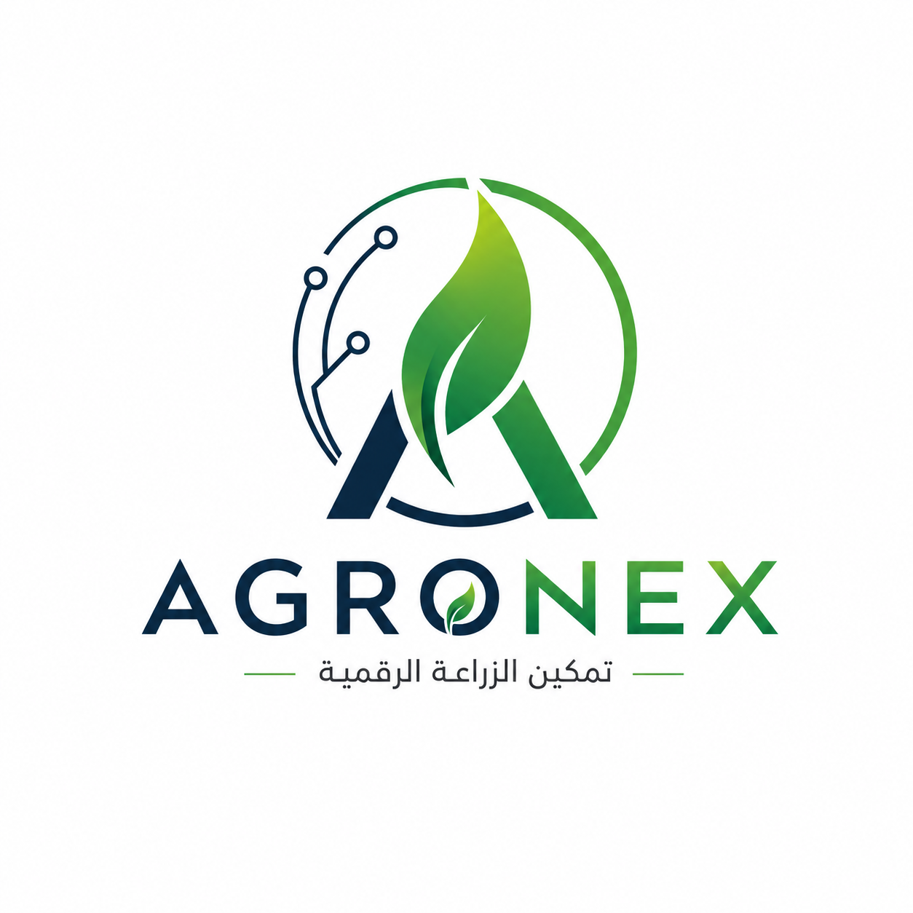

أهلًا بيك 👋
📍 جاري تحديد موقعك...
🌿
تشخيص أمراض النبات
صوّر النبات واعرف التشخيص فورًا
📚
بنك المعرفة
مقالات ومعلومات زراعية موثوقة
🧪
خلط المبيدات والأسمدة
تأكد قبل ما تخلط أي مادتين
🔍
دليل المواد الفعالة
تصنيف واستخدام كل مادة
📈
أسعار المحاصيل
القمح، الذرة، القطن، والمزيد
👤
بروفايلي
مزارعك ومحاصيلك وبياناتك